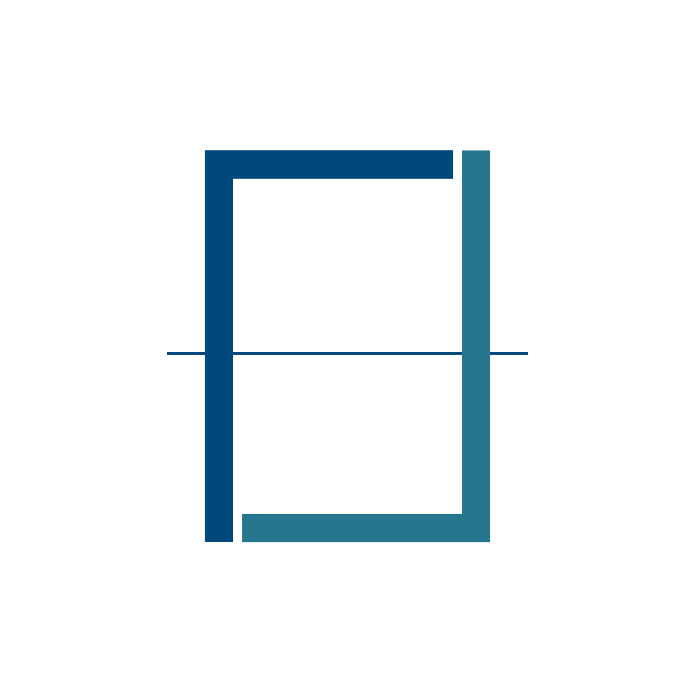

<%= stylesheet_link_tag 'application', media: 'all', 'data-turbolinks-track' => true %> <%= javascript_include_tag 'application', 'data-turbolinks-track' => true %> <%= csrf_meta_tags %>
Toggle navigation

<%= link_to 'Home', root_path%>
<%= link_to 'News', posts_path %>
Curriculum
Contact
<% if current_user.present? %>
<%= link_to 'Nuovo articolo', new_post_path %>
<%= link_to 'Logout', destroy_user_session_path, :method => :delete %>
<% else %>
<%= link_to 'Log-in', new_user_session_path %>
<%= link_to 'Sign-up', new_user_registration_path %>
<% end %>
<%= notice %>
<%= alert %>